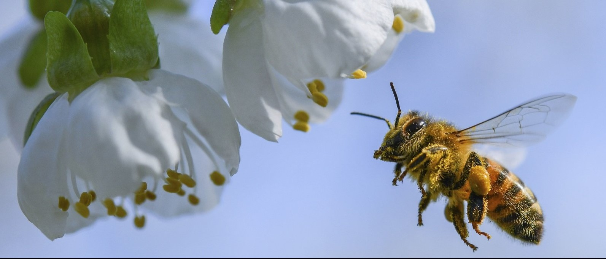

Importance
Why are bees so important? What can those tiny little things do that is so significant? These are common, understandable questions. The answer lies in their design. Honeybees are what we call pollinators. Pollinators play the role of fertilizers for flowering plants, spreading pollen from plant to plant allowing for seeds to be made and new plants to be grown. Understanding the role bees fulfill demonstrates just how irreplaceable they are in nature.
Bees pollinate a lot of fruits and vegetables that we eat every day. Some of the fruits include apples, watermelons, cantaloupe, blueberries, and peaches. Some of the vegetables include asparagus, broccoli, carrots, onions, and celery. Could you imagine going through life without these common pieces of our daily diets? About one-third of the food eaten by Americans comes from crops pollinated by honeybees. With their steady decrease in population, it is becoming harder and harder to provide these crops to meet demand. It is possible that in the very near future we will have to say goodbye to all off these fruits and vegetables that we have taken for granted. It is not too late however; we can turn the tide and make a real effort to preserve this irreplaceable species and continue to enjoy the foods that keep us all healthy.